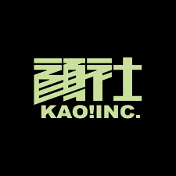

「顏社KAO!INC.」是台灣最知名的嘻哈廠牌,於2005年由迪拉胖(本名張逸聖)與熱愛饒舌音樂的夥伴一起成立,致力於推動華語饒舌音樂,培養更多饒舌歌手。目前旗下的藝人有金曲歌王Leo王、有著慵懶聲線的國蛋、魔法Boy春艷、李權哲等等,過去也曾和饒舌詩人蛋堡、嘻哈女王葛仲珊、李英宏 A.K.A. DJ DIDILONG合作。
除了上述歌手使顏社備受關注,還因為2018年10月與柯文哲合作推出競選主題曲〈Do Things Right〉(feat. 春艷),從此更加聲名大噪,讓原本不了解嘻哈的人也漸漸注意到他們。